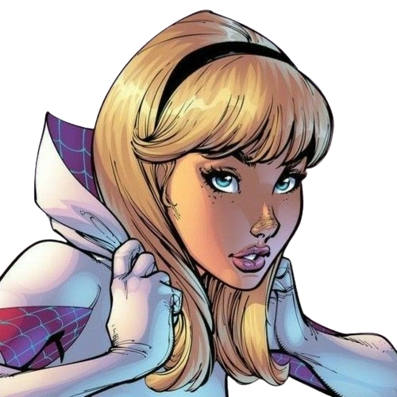
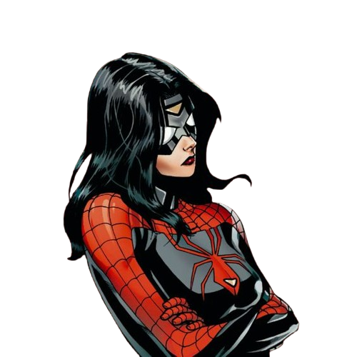
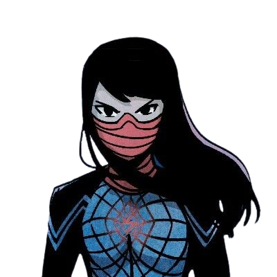
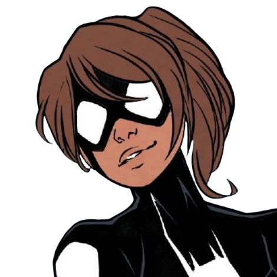
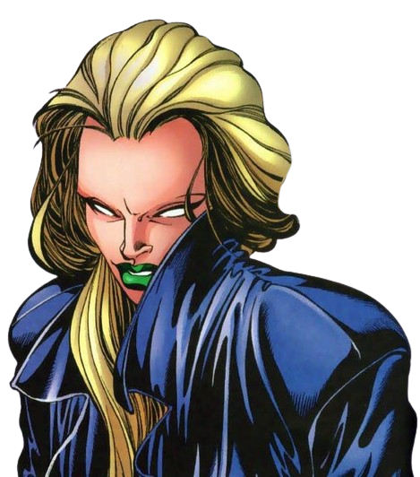

MULHERES-ARANHA
Bem-vindo ao Mundo das Mulheres-Aranha:
Neste site, você encontrará um resumo das fascinantes histórias de cinco mulheres que carregam o legado do Homem-Aranha.

GWEN-STACY
Gwendolyn Maxine Stacy foi a segunda namorada de Peter Parker, o Homem-Aranha, e o primeiro
grande amor de sua vida. Criada por Stan Lee e Steve Ditko, ela fez sua primeira aparição em The
Amazing Spider-Man #31 (Dezembro de 1965).
O escritor Jason Latour e o desenhista Robbi Rodriguez
colaboraram para criar Edge of Spider-Verse #2, que explora o universo conhecido como Terra-65,
onde Gwen Stacy é aquela picada por uma aranha radioativa. Após o evento, ela adquire os poderes
de aranha e adota o nome de Mulher-Aranha.
Gwen Stacy é uma adolescente de 15 anos muito gentil, doce, carinhosa e meiga. Ela possui uma autoconfiança extrema e confia nos outros, sempre pronta para ajudar.
Após ser picada pela aranha radioativa, todas as suas capacidades físicas foram ampliadas ao nível de um super-humano. Gwen possui força, velocidade, resistência, vigor, reflexos e equilíbrio muito mais desenvolvidos do que uma pessoa comum.

JESSICA DREW
Jessica Drew, mais conhecida como Mulher-Aranha, é uma das personagens icônicas da Marvel Comics. Além das habilidades em artes marciais, ela possui uma série de poderes únicos, como força sobre-humana, agilidade aumentada, e a habilidade de emitir "venom blasts" bioelétricos.
Jessica Drew foi geneticamente alterada por uma combinação de soro de aranha e terapia genética, o que lhe concedeu seus poderes aracnídeos.
Sua história no universo Marvel inclui períodos tanto como heroína quanto como anti-heroína, enfrentando desafios pessoais e vilões notórios. Jessica já fez parte de equipes como os Vingadores, além de ter tido sua própria série solo de quadrinhos.
No cinema, além da referida aparição como Mulher-Aranha da Terra-404, o personagem também foi explorado em outras mídias, contribuindo para sua popularidade contínua entre os fãs de super-heróis.

SILK
Silk é uma super-heroína fictícia que aparece nos quadrinhos americanos publicados pela Marvel Comics. Seu alter-ego é Cindy Moon, de origem coreana.
Durante uma exposição pública patrocinada pela Corporação Techtronics, Cindy Moon, uma estudante do ensino médio, foi picada por uma aranha irradiada por um acelerador de partículas.
A mesma aranha havia picado Peter Parker momentos antes. Após ser mordida, Cindy desenvolveu habilidades semelhantes às de Parker, incluindo a capacidade de produzir teias orgânicas. No entanto, sua primeira manifestação desses poderes resultou acidentalmente na captura de seus próprios pais.
Por um período, Cindy foi mantida em reclusão para sua própria segurança, até ser eventualmente libertada pelo Spider-Man.

ANYA CORAZON
Originária de Brooklyn, Anya, uma jovem ginasta, vivia com seu pai, Gilberto, um repórter investigativo. Após se mudar para o México na infância e retornar aos Estados Unidos após a trágica morte de sua mãe, Anya teve um encontro destinado com o sobrenatural.
Num cotidiano escolar comum, Anya testemunhou sua amiga Lynn sendo intimidada por um garoto mais velho. Demonstrando coragem, Anya interveio, desencadeando uma briga. Esse episódio a levou a uma ponte no parque, onde descobriu uma trama sinistra envolvendo a Sociedade da Vespa. Ao salvar um estranho atacado por esse grupo, Anya recebeu poderes do feiticeiro Miguel Legar, líder da Sociedade da Aranha.

CHARLOTTE WITTER
Charlotte Witter é uma personagem fictícia do universo Marvel Comics. Ela apareceu pela primeira vez em Amazing Spider-Man Vol. 2 #5, lançado em junho de 1999. Charlotte é conhecida por assumir a identidade da Aranha Escarlate, uma versão distorcida da persona aracnídea que absorve os poderes de outras heroínas.
Como cientista, Charlotte descobriu um método para roubar os poderes de usuários de aranha, incluindo Jessica Drew e Mattie Franklin. Ao absorver esses poderes, ela se tornou a Aranha Escarlate, exibindo força sobre-humana, agilidade, reflexos aprimorados e a habilidade de aderir às superfícies. No entanto, sua versão dos poderes aracnídeos é considerada menos refinada do que a de outras Aranhas.
Ao longo de sua história nos quadrinhos, Charlotte Witter foi uma vilã recorrente, frequentemente confrontando o Homem-Aranha e outras heroínas aracnídeaas.